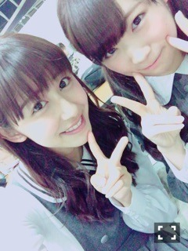
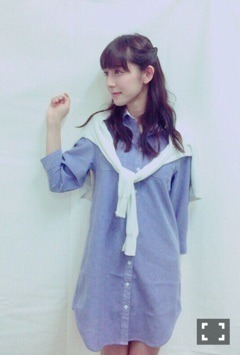
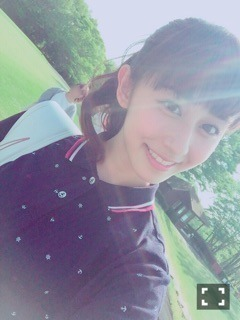

| 2015/05 03 Sun | 斎藤ちはる 握手会♡GW(´>∀<｀)ゝ |
ちはるーむへようこそ！！！
昨日は全国握手会、今日は個別握手会と、
GWの始まりはたくさんの方に会える幸せな時間でした(﹡ˆ ˆ﹡)
まず、全国握手会！！
真夏とのペアでした\( ˆoˆ )/
気付いたら片想い以来のペア！！

真夏のこと見つけると毎回いじります。
真夏なんか嫌いだー！べー！
とか言って真夏はすごいいい人です。
絶対口では言わないけど真夏のこと好きだよ( ¯−¯ )♡べー
真夏のファンの方もありがとうございました(﹡ˆ ˆ﹡)
ズッキュンされた後の顔が、
みんな嬉しそうで、その顔を見るのが楽しくて幸せな気持ちになりました(﹡ˆ ˆ﹡)笑
そしてちはるーむめいとの皆さん！
長い列にわざわざ並んでくれて、
本当みなさん暖かいなーって実感しましたヽ(；；)丿
すごい嬉しかったですヽ(；；)丿
ありがとうヽ(；；)丿
そして、今日は個別握手会♪
大学生っぽく、シンプルカジュアルな格好したよー\( ˆoˆ )/

デニムシャツワンピ♡
結構好評で、嬉しかったよー(﹡ˆ ˆ﹡)
列にも沢山の方が並んでくれて、
それが途中途中ブースから見えて、
モチベーションアップにもつながって、
これからも頑張ろうって思えたし、
またみんな来てくれたら嬉しいなーって切実に思ったし、
話まとまらないけど...
とにかくすごい嬉しかったです！
ってことです！
(﹡ˆ ˆ﹡)
本当みなさんに感謝ヽ(；；)丿
ありがとうヽ(；；)丿

のぎ天ゴルフ部も、頑張ってます！！
たくさんゴルフ頑張って、バナナマンさん達とゴルフ行けたりしたらすごい楽しそうだなーって密かに思ってるんだ(｡･o･｡)ﾉ
今日ののぎ天生配信にも、
トークには参加できなかったけど
横浜のオススメのお店「招福門」に川後と優里に行ってもらったり
らりんオススメの「マリンタワー」に行ったりと、すごい楽しかったよ！！♡
ちなみに今日の「乃木坂工事中」出てます！！
見てね〜\( ˆoˆ )/
催眠術...恐るべし...
春、すき♡
ばいるんっ
るんるんっ
ちはるんっ
(´>∀<｀)ゝ